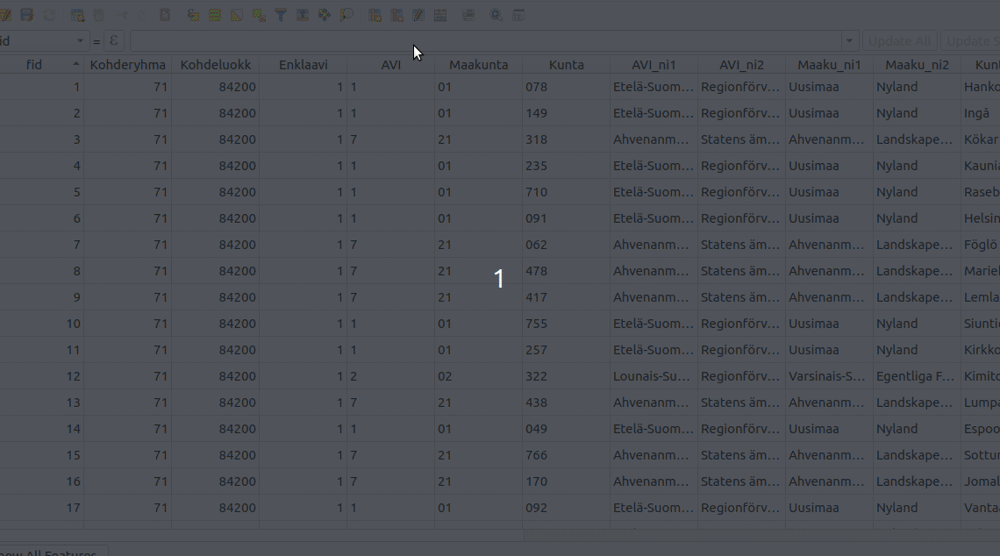

14 Kappale 13: Oman funktion luominen
14.1 Tehtävä 13.1
Luo funktio (anna sille nimeksi koululista), jonka avulla voidaan luoda lista oppilaitoksista, jotka sijaitsevat korkeintaan X m päässä hallintoalueiden keskipisteestä.
- Funktion syötteet (argumentit): muokattavan polygonitason nimi, hyödynnettävän pistetason nimi, sovellettava maksimietäisyys (esim. EPSG: 3067 tapauksessa metreinä)
- Tarvittavat rakennuspalikat:
kohde.geometry(),geometria-objekti.centroid(),geometria-objekti.distance(geometria-objekti)

Esimerkki funktion tuloksesta. Funktion tulee laskea painopiste hallintoalue ja luoda lista oppilaitoksista, jotka sijaitsevat annetun etäisyyden päässä painopisteestä.
Aineistot:
oppilaitokset.gpkghallintoalueet.gpkg
Voit myös katsoa mallia esimerkkifunktioista:
# Template for custom function modifying vector layer (name is taso1) so that its attribute field (name is kentta1) will always get
# the value it had previously + the constant we give to the function as parameter.
from qgis.core import *
from qgis.gui import *
@qgsfunction(args='auto', group='Custom', referenced_columns=[])
def function_name(layer_input1, field_name, value_input1, feature, parent):
"""
Info text
"""
# Saves the layer to be modified into a variable called layerva
layer = QgsProject.instance().mapLayersByName(layer_input1)[0]
# Adds a new column to the layer_inout1 with the name we specified as input
layer_provider=layer.dataProvider()
layer_provider.addAttributes([QgsField(field_name, QVariant.Integer)])
layer.updateFields()
col_ind = len(layer.fields().names()) - 1
layer.startEditing()
# Goes through all features in the layer (feat variable refers to each feature in the given layer once)
# At each round, all the indented rows will be executed
for feat in layerva.getFeatures():
# Adds given value to the value of the given field of the current feature
uusi = feat[field_input1] + value_input1
id = feat.id()
attr_value = {col_ind:uusi}
layer_provider.changeAttributeValues({id:attr_value})
layer.commitChanges()
# Specifies what the function returns. As we only modify values of the layer > nothing gets returned
return
# How to call this function from Expression window?
function_name(taso1, kentta1, 10)
# Template for custom function calculating the mean of the absolute value of the attribute field (name is kentta1)
# of the vector layer (name is taso1).
from qgis.core import *
from qgis.gui import *
# Import necessary python packages
import numpy
@qgsfunction(args='auto', group='Custom', referenced_columns=[])
def function_name(layer_input1, field_input1, feature, parent):
"""
Info text
"""
# Saves the layer to be modified into a variable called layerva
layerva = QgsProject.instance().mapLayersByName(layer_input1)[0]
# Saves the index of the field to be modified into a variable called field_idx
field_idx = layerva.fields().indexOf(field_input1)
# Creates an empty list
lista = list()
# Goes through all features in the layer (feat variable refers to each feature in the given layer once)
# At each round, all the indented rows will be executed
for feat in layerva.getFeatures():
# Conditional statement:
# if value of the given field for current feature is positive or zero, set temp variable to match current value
if feat[field_input1] >= 0:
temp = feat[field_input1]
# if value of the given field for current feature is not positive or zero, set temp variable to match current value multiplied with -1
else:
temp = -1 * feat[field_input1]
# Adds the value saved in the temp variable to the list called lista
lista.append(temp)
# Note that if we would also want to change the value of field_input1, we would use:
#uusi_arvo = 99
#layerva.changeAttributeValue(feat.id(), field_idx, uusi_arvo)
# Calculates the mean of the values in the list and saves it to the variable called ka
ka = numpy.mean(lista)
# Specifies what the function returns (in this case a real value saved in the variable ka)
return ka
# How to call this function from Expression window?
function_name(taso1, kentta1)Tallenna uusi funktio seuraavalla tavalla:
 Käytä tätä pohjaa funktiolle:
from qgis.core import *
from qgis.gui import *
# Dekoraattorifunktio (@qgsfunction). Tärkeää määrittää usesgeometry avainsana-argumentti 'True':ksi
@qgsfunction(args='auto', group='Custom', referenced_columns=[], usesgeometry=True)
def koululista(layer1, layer2, max_distance, feature, parent):
"""
Returns list of schools located closer to the each administrative area's centroid than given distance.
"""
admin_layer = ... # Tallenna annettu hallintoalue- taso muuttujaan.
# Millä metodilla haet QGIS- projektin instanssista tason nimen perusteella?
schools_layer = ... # Tallenna annettu oppilaitos- taso muuttujaan samalla tavalla.
# Funktio suoritetaan joka kohteelle. Tällä hetkellä käsiteltävä kohde on
# automaattisesti tallennettu (@qgsfunction- dekoraattori) feature- muuttujaan.
admin_centroid = ... # Laske painopiste hallintoalue- kohteelle. Millä metodilla voit laskea geometrialle painopisteen?
# Käy läpi for- silmukasssa oppilaitoskohteet. Lisää kohteet listaan 'school_names', jos
# kohteen hallintoalueen painopisteen etäisyys oppilaitoskohteesta on alle 'max_distance'- argumentin.
# Voit käyttää joko "perinteistä" for- silmukkaa
for school_feature in school_layer.(...): # Millä metodilla saat palautettua tason kohteet?
if ...:
...
# Tai "list comprehension"- toiminnallisuutta:
school_names = [school_feature[...] for school_feature in school_layer.(...) if ...]
result = ', '.join(school_names) # Yhdistä school_names listan alkiot, erottimena pilkku ja välilyönti
if (result): # Jos tulos ei ole tyhjä merkkijono, palautetaan tulos
return result
else: # Jos tulos on tyhjä, palautetaan NULL
return NULLfrom qgis.core import *
from qgis.gui import *
@qgsfunction(args='auto', group='Custom', referenced_columns=[], usesgeometry=True)
def koululista(layer1, layer2, max_distance, feature, parent):
"""
Returns list of schools located closer to the each administrative area's centroid than given distance.
"""
admin_layer = QgsProject.instance().mapLayersByName(layer1)[0] # Tallenna annettu hallintoalue- taso muuttujaan
schools_layer = QgsProject.instance().mapLayersByName(layer2)[0] # Tallenna annettu oppilaitos- taso muuttujaan
admin_centroid = feature.geometry().centroid() # Laske painopiste hallintoalue- kohteelle
school_names = [school_feature['onimi'] for school_feature in schools_layer.getFeatures() # Käy läpi for- silmukassa oppilaitoskohteet ja
if admin_centroid.distance(school_feature.geometry()) < max_distance] # tarkista onko etäisyys painopisteeseen alle annetun argumentin
result = ', '.join(school_names) # Yhdistä school_names listan alkiot, erottimena pilkku ja välilyönti
if (result): # Jos tulos ei ole tyhjä merkkijono, palautetaan tulos
return result
else: # Jos tulos on tyhjä, palautetaan NULL
return NULL